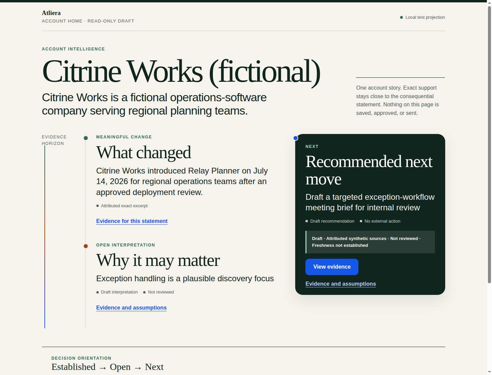
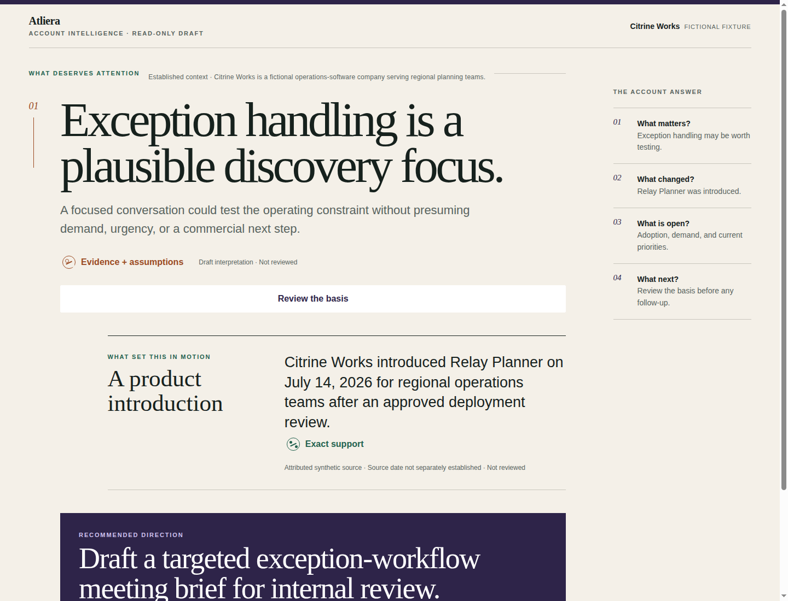
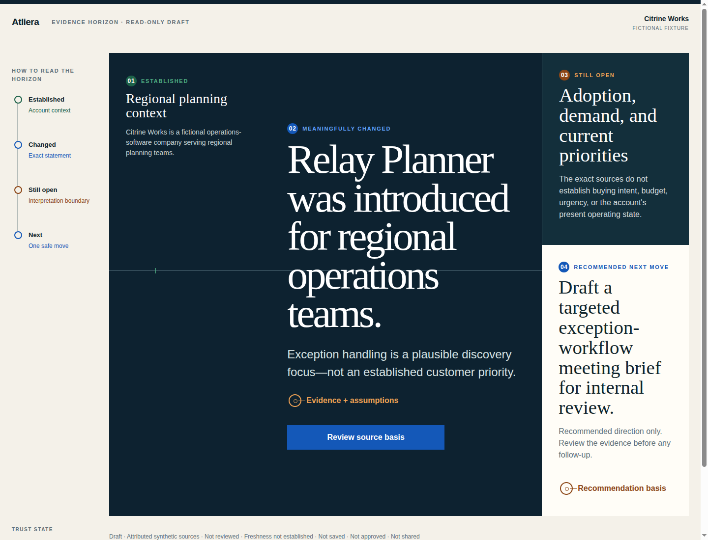
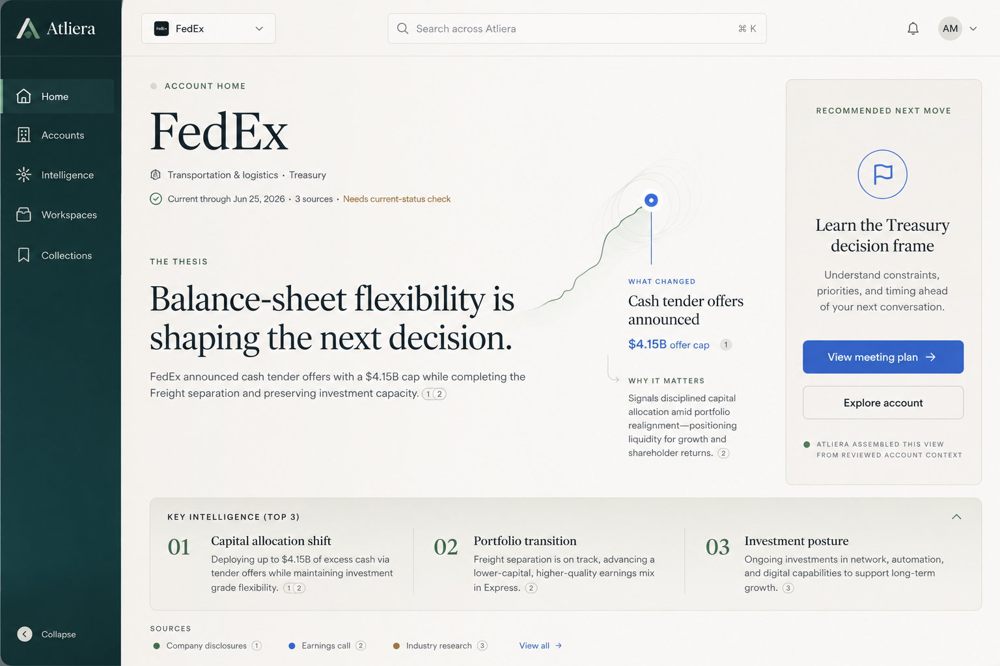
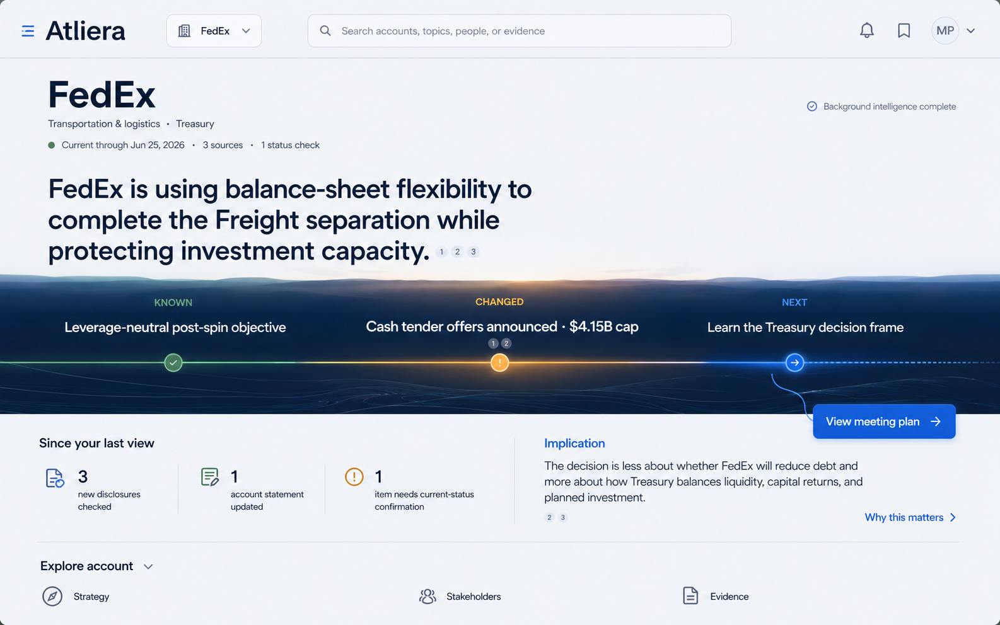

Merged C1 baseline and coded pivots



Expressive lineage floor


Review-only comparison surface. The lineage images are calibration references, not product truth or capability authority.
C1V-01 · visual comparison
All three account views use the same C1 fixture semantics. Lineage concepts calibrate expression but do not authorize their depicted capabilities.





Review-only comparison surface. The lineage images are calibration references, not product truth or capability authority.